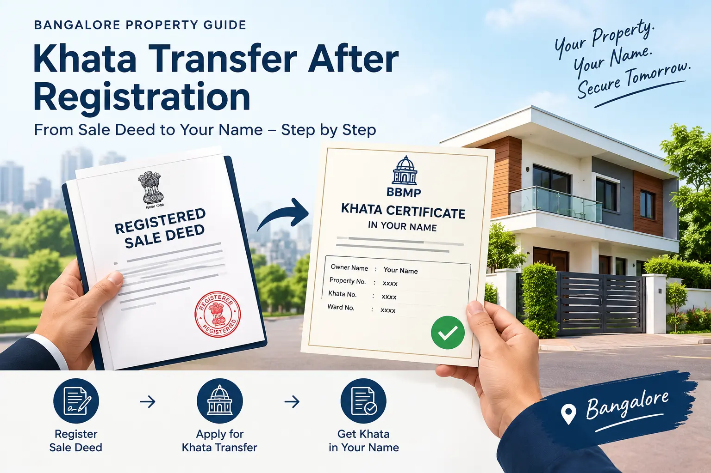

Khata transfer after registration is the step that puts your name on the city's tax record once your sale deed is registered. In Bangalore you apply online with the registered deed, the seller's khata, a tax receipt, an encumbrance certificate and Aadhaar e-KYC, and the new khata is issued after verification.
Registering a sale deed and updating the khata are connected, but they are not the same task. The registration records the transfer of ownership. The khata update changes the civic property record used for property-tax administration and related services. Buyers should check the khata position after registration instead of assuming the record changed automatically.
The municipal administration in Bengaluru is changing: the former BBMP structure has been replaced by the Greater Bengaluru Authority and city corporations. Portal labels, office jurisdictions and application routes may change as services transition. Use the current official portal and confirm the process applicable to your property's location before submitting documents.
Khata Transfer After Registration: Five Things to Do First
Check your registered sale deed
Confirm the deed is registered and the names, property number, survey details, extent and address match the existing records.
Check the seller's khata and tax
Get the latest khata certificate and extract, confirm the khata type and check whether property-tax dues remain.
Collect the supporting documents
Keep the sale deed, latest tax receipt, updated encumbrance certificate and identity details ready. Additional documents may apply to apartments or unusual ownership histories.
Check the online khata portal
Look for any transfer workflow or status linked to the registered deed. If nothing has started, use the current application route rather than waiting indefinitely.
Track verification and save the new record
Keep the acknowledgement, respond to requests for clarification and download the updated khata certificate and extract when issued.
Sale Deed Registration vs Khata Transfer
These steps serve different purposes. Completing one does not mean the other has been completed. Keep proof of registration and the final khata record with your property documents.
| Point | Sale deed registration | Khata transfer |
|---|---|---|
| Purpose | Records the conveyance of property ownership through the registration process. | Updates the municipal or civic property record for tax administration and related services. |
| Handled through | The relevant Sub-Registrar and registration system. | The applicable online khata system and the responsible civic authority or office. |
| Main records | Registered sale deed and registration details. | Khata certificate and extract showing the updated owner details, where issued. |
| What to check | Correct names, property description, registration number and deed copy. | Correct owner name, property details, tax status and khata category. |
For help with the service itself, see our khata transfer service page. For the wider process and different transfer situations, read the general khata transfer guide.
How to Transfer Khata After Sale Deed Registration
-
Step 1: Check the registered sale deed
Start with the final registered deed, not just the draft or appointment receipt. Check that the buyer's name, seller's name, property address, survey or property identification details, extent and schedule are consistent with the earlier khata and tax records. Small spelling differences or mismatched property identifiers can trigger clarification requests.
If you notice an error in the registered deed, do not try to hide it by entering different details in the khata application. Ask the registration office or a qualified property professional how the error should be corrected. If you need a broader document review, see property document verification.
-
Step 2: Check whether any online process has started
Open the current official khata portal and check whether an application or status is linked to the registered transaction. Do not assume the khata has transferred automatically. If no application or status appears, follow the portal’s instructions to submit the appropriate application for the property’s civic jurisdiction.
Do not assume the khata has transferred simply because registration is complete or an SMS was received. Confirm the actual application status and the final owner details. If there is no application or status, follow the current manual or online application instructions for the relevant civic jurisdiction. For registration-related questions, you can also check the official Kaveri registration portal; it is separate from the khata application system.
-
Step 3: Check the seller's khata, property tax and verification
Ask for the seller's latest khata certificate and extract, and compare them with the registered deed. Confirm whether the record is A-Khata, B-Khata or another type of record applicable to the property. A khata update does not automatically regularise a property or remove restrictions connected with its underlying status.
Review the latest property-tax receipt and check for arrears, penalties or mismatched property details. The seller may need to participate in identity or Aadhaar-based verification, depending on the current portal workflow. Agree in advance who will clear any outstanding dues and help complete verification.
-
Step 4: Collect the documents
Prepare clear copies or digital files of the registered sale deed, existing khata certificate and extract, latest property-tax receipt, updated encumbrance certificate and buyer and seller identity details. Keep the registration number and application acknowledgement accessible. Apartment cases may require additional building or association documents, including an Occupancy Certificate where applicable.
Use the current portal checklist as the final authority because requirements can vary by property type, jurisdiction and the way the property was acquired. Do not upload unclear scans or documents with inconsistent names without first checking how to address the mismatch.
-
Step 5: Submit the application and complete verification
Use the current online khata system for the responsible civic authority and select the service that matches a transfer following a registered sale. Enter the property and owner details carefully, upload the requested documents, complete e-KYC or other identity checks where required, and pay the applicable civic charges shown by the official system. Save the acknowledgement or application number and any payment receipt.
Depending on the case, officials may verify records, request additional documents, inspect the property or require a visit to the ward or zonal office. Monitor the application and respond to notices or queries through the method specified by the authority. Keep copies of every response.
-
Step 6: Download the updated khata and update related records
Once the application is approved, download the new khata certificate and extract, if those records are issued for your case. Check that the owner's name, property details and other particulars are correct before relying on the document. If an error remains, use the official correction or grievance route.
Store the new khata with the registered deed, encumbrance certificate and tax receipts. Update relevant records with your lender, utility providers, association or other institutions where needed. Khata transfer does not replace the sale deed, building approvals or other documents that may be required for a future transaction.
Special Cases Buyers Should Check
Apartment or gated-community purchase
Apartment properties can involve unit-level khata details, parent-property records and building approvals. Check whether the unit details match the registered deed and whether an Occupancy Certificate or other building document is requested for your case. If the seller's records refer to a different unit number, floor, undivided share or property identifier, resolve the mismatch before applying.
B-Khata or unclear property status
A transfer application is not the same as conversion or regularisation. If the property is recorded under B-Khata or its status is unclear, the available route and services may be limited. Review the current record and the applicable rules before assuming that an ordinary transfer will produce an A-Khata or clean e-Khata. You can read the B-Khata to A-Khata conversion guide for the separate issue.
Property inherited, gifted or divided rather than purchased
The documents and checks can differ when the ownership change follows inheritance, a gift deed, partition or release rather than a sale. Use the deed or succession documents that match your situation. For a gift deed, see our guide to khata transfer after a gift deed; for deed preparation or registration support, visit sale and other deed services.
Records held under a different civic jurisdiction
Do not rely only on an older BBMP instruction if the property now falls under a changed administrative structure or a different local authority. Confirm the responsible office, portal and current checklist using the property's location and identification details. Bengaluru's administrative and portal arrangements may change, so recheck the official instructions when you apply.
Documents Usually Needed for Khata Transfer
The exact checklist should be confirmed on the current official portal before submission. Commonly requested documents or details include:
- Registered sale deed: The final registered copy showing the purchase and property schedule.
- Existing khata certificate and extract: The seller's current civic property record, where available.
- Latest property-tax receipt: Proof of the most recent tax payment and a way to check for arrears.
- Updated encumbrance certificate (EC): A record to help confirm registered transactions affecting the property.
- Buyer and seller identity details: Aadhaar-based verification or other identity information requested by the current system.
- Property identification details: PID, assessment, survey, registration or other numbers applicable to the property.
- Apartment or building documents: An Occupancy Certificate or additional records may be required in some cases.
- Application acknowledgement and payment receipt: Keep these after submission for status checks and follow-up.
This is a preparation list, not a guarantee that every item will be sufficient. The authority may request extra documents based on the property, its previous records or the ownership route. For information about property tax records, see our Bengaluru property-tax guide.
Common Reasons for Khata Transfer Delays or Rejection
Names or property details do not match
A spelling difference, old property number, incorrect extent or inconsistent schedule can prevent records from matching. Compare the deed, khata and tax records before filing.
Property-tax arrears remain unpaid
Outstanding dues or tax entries against the wrong property details may need to be resolved before the transfer can proceed. Obtain a clear view of the tax position rather than relying on an old receipt.
Seller verification is incomplete
The portal may require the seller to verify their identity or complete a related step. Contact the seller early and keep a record of attempts to complete the required process.
Documents are missing or difficult to read
Blurry scans, missing pages or an outdated encumbrance certificate can lead to requests for more information. Submit legible documents and follow the current checklist.
The khata category or underlying property status needs review
B-Khata status, unapproved construction, parent-record issues or other discrepancies may require a separate review. Do not treat a standard transfer application as a way to resolve every property issue.
Portal or jurisdiction changes create confusion
Old instructions may point to a retired service, different menu or office. Verify the current route for the property's jurisdiction and keep the acknowledgement for follow-up.
If an application is delayed, first check the status and any outstanding query, then follow the official grievance or office route. Keep your communications factual and retain copies of the documents submitted.
What Does Khata Transfer Cost?
The total cost depends on the applicable civic charges, the property and the work required in the individual case. Check the current official portal or responsible office for statutory charges and payment instructions. Keep the official receipt for every payment.
If you want professional assistance, ask for a written quote after the documents and property status have been reviewed. Government fees and statutory charges are separate from a consultant's professional fee. Avoid relying on old fee figures or informal estimates that may not apply to your property or the current rules.
Marvel Consultants can help review the documents, identify missing information and coordinate the applicable process. See the khata transfer service page for more information about assistance.
How Marvel Consultants Can Help
After registration, buyers often need help checking the previous khata, confirming the tax position, preparing the document set and understanding a portal query. Marvel Consultants can review the papers available to you, explain the next practical step and assist with process coordination where appropriate.
The work required depends on the property's record and jurisdiction. A document review does not guarantee approval or a particular outcome; the relevant authority makes the decision under the rules applicable to the case. If you are buying a property and want to plan the post-registration steps in advance, see our property-buying guide. You can also review property-owner support and property documentation services.
FAQs: Khata Transfer After Registration
Is the khata transferred automatically after the sale deed is registered?
Do not assume the khata transfer is automatic. Check the current official khata portal for an application or status linked to your registered transaction. If no transfer workflow appears, follow the portal’s instructions to submit the appropriate application for the property’s civic jurisdiction.
How soon after registration should I apply for the khata transfer?
As soon as the registered deed and the updated encumbrance certificate are available. We have not seen a fixed legal deadline, but waiting causes problems: tax notices keep going to the seller, and you cannot easily take a loan, sell or apply for approvals in your name.
What documents are needed for khata transfer after registration?
Usually the registered sale deed, the seller's khata certificate and extract, the latest property tax receipt, an up-to-date encumbrance certificate, ID proof for the buyer and the seller, and details of the electricity connection if asked. For an apartment, the Occupancy Certificate may also be needed. The exact list can change by case, so confirm it before applying.
Can I apply for the khata transfer online?
Yes. Khata transfer applications in Bengaluru are made through the online khata system, and some cases still need document verification, a site check or a visit to the ward or zonal office.
Does the seller need to take part in the khata transfer?
In many cases yes. The seller may need to complete Aadhaar-based verification on the portal, and the seller's tax dues must be clear. If the seller cannot be reached, the case may need manual review, so get a professional to look at it.
What if the seller has unpaid property tax?
Pending tax in the seller's name is one of the most common reasons for delay. The dues should be cleared before the khata is changed. Check the tax position before you complete the purchase and again before you apply.
Is registering the sale deed the same as transferring the khata?
No. Registration at the Sub-Registrar's office makes you the legal owner. The khata transfer updates the civic record for property tax and other services. You need both.
Can the khata be transferred if the property is on B-Khata?
It depends on the case. B-Khata properties face limits on the services available, and a clean e-Khata is usually linked to A-Khata status. Have your documents reviewed before applying, because the right step may be to resolve the B-Khata position first.
Need Help With Khata Transfer After Registration?
Share your registered sale deed and current khata details so the next steps can be reviewed for your case.